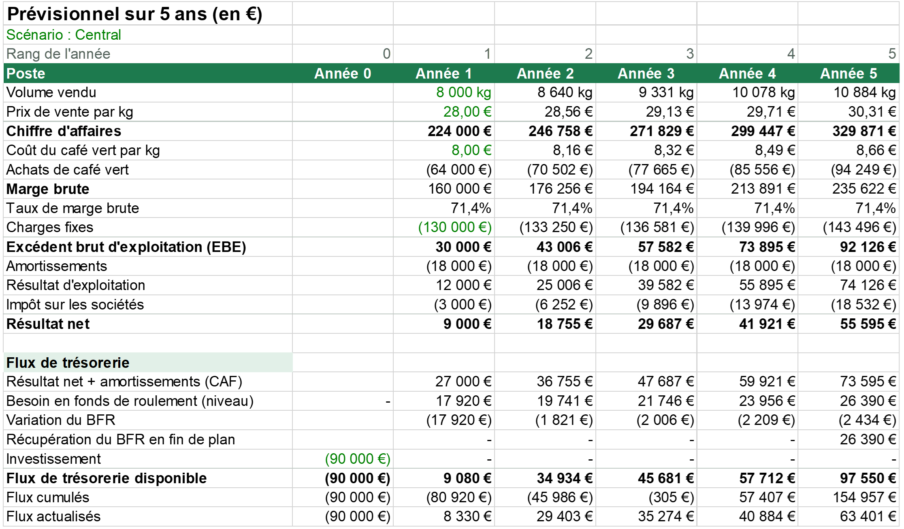
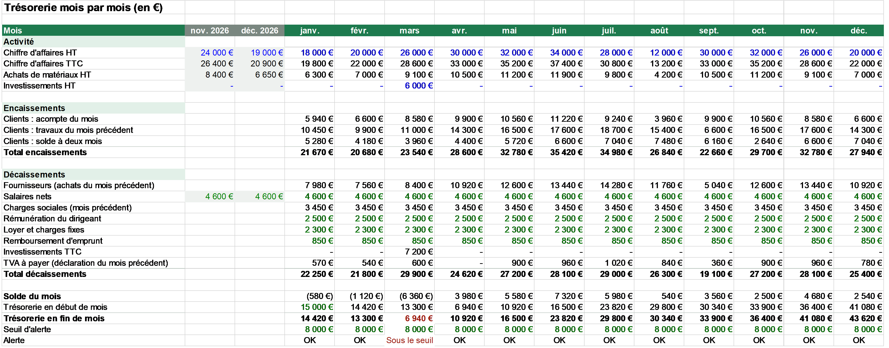
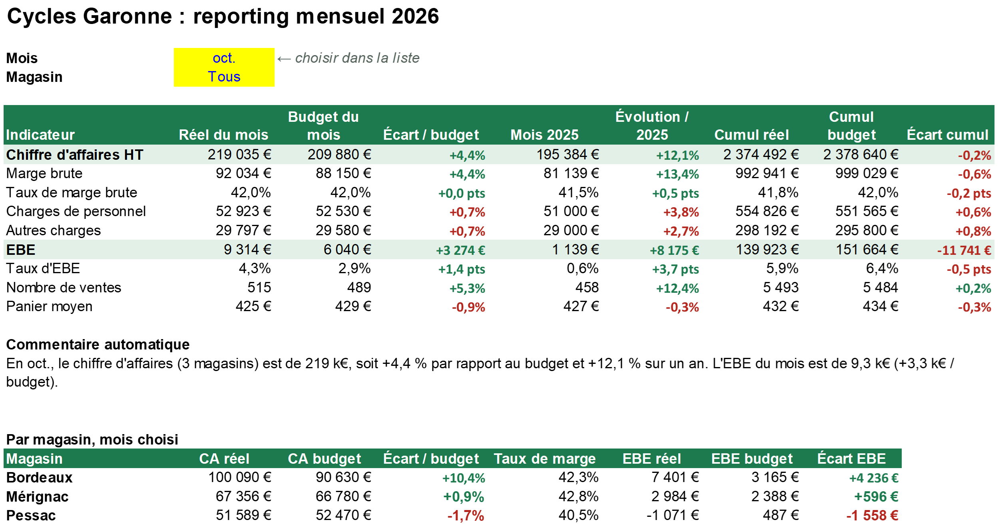
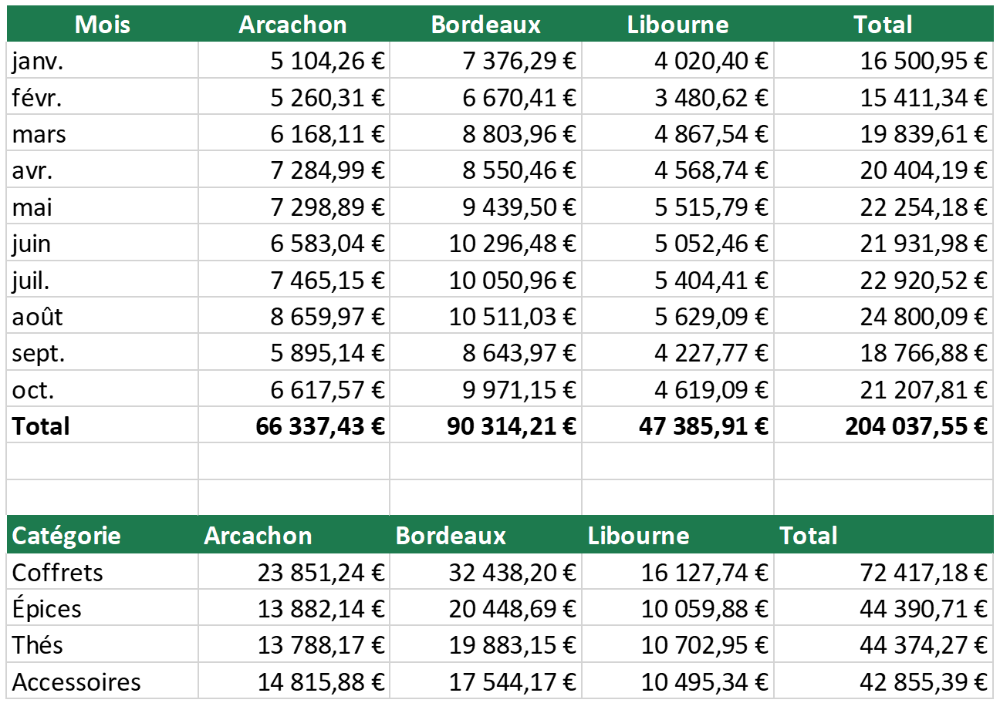

Modèles financiers et business plans
Pour créer une entreprise, lever des fonds ou décider d'un investissement.
- Prévisionnel sur 3 à 5 ans
- Calcul de VAN, TRI, délai de retour
- Scénarios et sensibilités
à partir de 90 € · livré en 5 jours
=DÉCISION(vos_données ; modèle ; automatisation)Finance et automatisation pour les créateurs d'entreprise, indépendants et TPE. Je transforme vos fichiers Excel et vos données en outils de décision : modèles financiers, tableaux de bord, scripts qui font le travail répétitif à votre place.
Pour créer une entreprise, lever des fonds ou décider d'un investissement.
à partir de 90 € · livré en 5 jours
Vos chiffres clés lisibles en un coup d'œil, mis à jour sans ressaisie.
à partir de 60 € · livré en 4 jours
Les tâches qui vous prennent des heures chaque semaine, faites en quelques secondes.
à partir de 40 € · livré en 3 jours
Prix de départ pour un besoin simple. Après un premier échange, vous recevez un prix fixe et un délai avant tout démarrage.
Chaque exemple est un vrai fichier Excel, entièrement en formules, à télécharger et à tester.
Un modèle Excel sur 5 ans pour un atelier de torréfaction à Bordeaux (exemple fictif). On choisit un scénario dans une liste déroulante et tout se recalcule : compte de résultat, flux de trésorerie, VAN, TRI, délai de récupération, point mort. Une page explique les hypothèses et les simplifications.

| Scénario | Pessimiste | Central | Optimiste |
|---|---|---|---|
| Volume vendu en année 1 | 6 500 kg | 8 000 kg | 9 000 kg |
| Chiffre d'affaires en année 5 | 205 734 € | 329 871 € | 444 542 € |
| VAN à 9 % | −169 840 € | 87 293 € | 267 187 € |
| TRI | non significatif | 32,1 % | 70,4 % |
| Délai de récupération | au-delà de 5 ans | 3,0 ans | 1,8 an |
Ce qu'un client retient : avec 90 000 € investis, le point mort est à 6 500 kg la première année. Sous ce volume, le projet perd de l'argent chaque année. Un business plan sert aussi à montrer ce risque.
Un tableau mois par mois pour une TPE de 3 personnes (exemple fictif). Il tient compte de ce qui fait vraiment varier le compte en banque : clients qui paient en trois fois, fournisseurs et charges sociales payés le mois suivant, TVA à 10 % sur les travaux mais 20 % sur les achats. Les mois sous le seuil d'alerte passent en rouge.

L'entreprise est rentable sur l'année (+28 620 €), mais en mars, l'achat d'outillage tombe en même temps que les encaissements faibles de l'hiver : la trésorerie descend à 6 940 €. Le savoir en janvier laisse le temps d'agir : décaler l'achat à avril ou demander un acompte plus élevé.
Un tableau de bord Excel pour une enseigne de vélos (exemple fictif). On choisit le mois et le magasin dans deux listes : indicateurs, écarts au budget et à l'an dernier, cumul de l'année, graphique et commentaire se mettent à jour seuls. Les écarts favorables sont en vert, les défavorables en rouge, en tenant compte du sens : une hausse des charges est défavorable.

| Octobre | CA réel | Écart / budget | EBE réel | Écart EBE |
|---|---|---|---|---|
| Bordeaux | 100 090 € | +10,4 % | 7 401 € | +4 236 € |
| Mérignac | 67 356 € | +0,9 % | 2 984 € | +596 € |
| Pessac | 51 589 € | −1,7 % | −1 071 € | −1 558 € |
Le mois est bon, mais l'année est en retard sur le budget. En cliquant sur Pessac, on voit pourquoi : des travaux devant le magasin ont fait chuter les ventes de juin à septembre. Bordeaux compense en partie grâce au lancement des vélos cargo. Un reporting utile pointe la cause, pas seulement le chiffre.
Un commerce de 3 boutiques (exemple fictif) reçoit chaque mois l'export de vente de chaque caisse. Les logiciels sont différents, donc les fichiers aussi. Un script les lit tous, les nettoie et produit un seul fichier Excel prêt à analyser.
Date;N° ticket;Catégorie;Qté;Montant TTC;Paiement 01/03/2026;BOR03-0009;Épices;2;16,62 €;Sans contact 01/03/2026;BOR03-0034;Accessoires;3;40,22 €;CB
date_vente,famille,num_ticket,total_ttc,qty,reglement 2026-03-01,ÉPICES,ARC03-0020,10.87,1,Sans contact 2026-03-05,ÉPICES,ARC03-0200, ,1,CB
COMPTOIR DES ÉPICES - LIBOURNE Journal des ventes - mars 2026 Date Ticket Catégorie Quantité Montant 01/03/2026 LIB03-0017 Coffrets 2 69,67 … TOTAL =SOMME(…)

Le point qui compte : rien ne disparaît en silence. Un onglet Contrôles indique, fichier par fichier, ce qui a été lu, retiré ou mis de côté, et liste les lignes à vérifier (montants manquants, 43 remboursements). Le total final a été recalculé séparément : 204 037,55 €, au centime près.
Télécharger l'exemple complet (fichiers d'entrée, script Python, résultat Excel)
Vous décrivez votre besoin et me montrez vos fichiers actuels.
Un prix fixe et un délai clairs avant de commencer.
Un fichier documenté que vous savez utiliser seul.
Une série de corrections incluse après livraison.
Vos fichiers restent confidentiels et ne sont jamais réutilisés pour un autre client.
Un système Python qui estime chaque jour les probabilités des matchs de 11 championnats européens et des coupes d'Europe, puis publie une page à jour automatiquement. Le football sert de terrain d'essai ; les méthodes sont celles de la finance quantitative : probabilités, calibration, backtest, comparaison au prix de marché.
Le constat est franc : le modèle égale le marché sans le battre. Je le dis parce qu'un modèle utile est d'abord un modèle dont on connaît les limites ; c'est la même rigueur que j'applique à un prévisionnel.
Chaque point est une tranche de prévisions ; sa taille indique le nombre de matchs. Sur la diagonale, la réussite réelle égale exactement la probabilité annoncée.
| Tranche | Matchs | Annoncé | Réel |
|---|---|---|---|
| 70-75 % | 386 | 74,4 % | 72,3 % |
| 75-80 % | 1 615 | 77,3 % | 78,3 % |
| 80-85 % | 962 | 82,3 % | 81,9 % |
| 85-91 % | 805 | 87,8 % | 88,9 % |
Rapprochements bancaires, retraitement de bilans, indicateurs clés pour les clients, audits internes.
Suivi financier de projets énergie (réseaux de chaleur, solaire industriel), modélisation ROI et VAN, tableaux de bord Power BI, reporting mensuel, analyse de risques.
Stratégie budgétaire de deux jeux vidéo, préparation d'une levée de fonds et des supports investisseurs.
Décrivez-moi votre besoin en quelques lignes : je vous réponds avec une première idée de solution, un délai et un prix.
linkedin.com/in/rudy-anael-27b385446